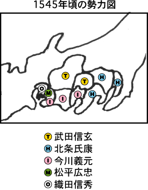

天文6年=1537年、ヨシモトは久保田利伸の故郷、駿河国(静岡県中部)を治めていた今川一族の、第9代目のボスに就任します。ヨシモトは五男だったのですが、お兄さん達が亡くなったりして、9代目を継ぐことになったのです。それまでのヨシモトは、お坊さんになるために禅僧の太原雪齋(タイゲン・セッサイ)を先生にして、京都でお経を読んだりしていました。実は、このセッサイ先生がクセモノ坊主で、ヨシモトが9代目になる時や、その後の様々な局面で、名軍師として暗躍したのです。
一方、五男坊のヨシモトは戦国時代のセレブ=公家(クゲ)のファンでした。テレビで観たことあるでしょ？顔を白塗りし、黒豆みたいな眉毛をして「マロは…」とか言っちゃう人達。あの公家です。ヴジュアル・ロックのファンがミュージシャンと同じファッションをするように、ヨシモトも公家ファッションにハマっていました。敵と闘う時も、公家化粧の白塗り顔に兜を被り、馬ではなくて輿(コシ)に乗って登場…まるでヴジュアル系デスメタル大名だったのです。
ヨシモト"デスメタル"イマガワは、甲斐(山梨県)の武田ファミリーや相模(神奈川県西部)の北条ファミリーとコラボして、尾張(愛知県西部)の織田信秀 (オダ・ノブヒデ)の侵攻に対抗します。さらにヨシモトは、織田チームにコケにされた三河(愛知県東部)の松平広忠(マツダイラ・ヒロタダ)に「バックアップしてやるから息子・竹千代(タケチヨ=のちの徳川家康)を人質に出せ」と言うのですが、護送係の戸田警備保障に裏切られ、なんと、こともあろーに、竹千代を敵の織田チームに捕られてしまうのです。怒ったヨシモトは戸田警備保障を倒産させ、本社の三河・田原城(愛知県田原市)も奪取、ソロ・デビューを狙っていた朝比奈泰能(アサヒナ・ヤスヨシ)を新社長にするのです。天文17年=1548年、「こりゃヤバイだぎゃぁ!」と思った織田チームは三河を攻撃しますが、セッサイやヤスヨシを大将にしたユニット・イマガワは楽勝し、織田チームを三河から追い払ったのです。
翌年の天文18年、勢づいたユニット・イマガワは織田チームの三河安祥城(愛知県安城市)を攻撃してノブナガの兄・信広(ノブヒロ)を捕らえ、人質交換で遂に竹千代の奪還成功。こうしてユニット・イマガワは、織田チームの拠点・尾張へ逆襲する準備を整えました。その後のヨシモトは、冒頭で紹介した「今川仮名目録」に追加法を加えたり、甲相駿三国同盟という地味だけど大切な仕事なんかをしました。ところが弘治元年=1555年にクセモノ坊主のセッサイが、さらに弘治3年にヤスヨシといったサポーターが次々と病死し、ユニット・イマガワのパワーにも陰りが見えはじめます。
ヨシモト"デスメタル"イマガワのラスト・ライヴは、永禄3年=1560年の有名な「桶狭間の戦い」です。その日は雨が降って蒸し暑く、ヨシモト軍は田楽狭間(デンガクハザマ)という谷間みたいな場所で、鎧を脱いで酒を飲んで歌って踊ってリラックスしていました。それまでの戦で織田チームに勝っていたので、気がユルんでいたんでしょう。そこを、一気に織田チームが攻めたのです。勝てるワケありません。ヨシモトは、織田チームの毛利良勝(モウリ・ヨシカツ)という無名の新人に、首を取られてしまいました。
一方、五男坊のヨシモトは戦国時代のセレブ=公家(クゲ)のファンでした。テレビで観たことあるでしょ？顔を白塗りし、黒豆みたいな眉毛をして「マロは…」とか言っちゃう人達。あの公家です。ヴジュアル・ロックのファンがミュージシャンと同じファッションをするように、ヨシモトも公家ファッションにハマっていました。敵と闘う時も、公家化粧の白塗り顔に兜を被り、馬ではなくて輿(コシ)に乗って登場…まるでヴジュアル系デスメタル大名だったのです。
ヨシモト"デスメタル"イマガワは、甲斐(山梨県)の武田ファミリーや相模(神奈川県西部)の北条ファミリーとコラボして、尾張(愛知県西部)の織田信秀 (オダ・ノブヒデ)の侵攻に対抗します。さらにヨシモトは、織田チームにコケにされた三河(愛知県東部)の松平広忠(マツダイラ・ヒロタダ)に「バックアップしてやるから息子・竹千代(タケチヨ=のちの徳川家康)を人質に出せ」と言うのですが、護送係の戸田警備保障に裏切られ、なんと、こともあろーに、竹千代を敵の織田チームに捕られてしまうのです。怒ったヨシモトは戸田警備保障を倒産させ、本社の三河・田原城(愛知県田原市)も奪取、ソロ・デビューを狙っていた朝比奈泰能(アサヒナ・ヤスヨシ)を新社長にするのです。天文17年=1548年、「こりゃヤバイだぎゃぁ!」と思った織田チームは三河を攻撃しますが、セッサイやヤスヨシを大将にしたユニット・イマガワは楽勝し、織田チームを三河から追い払ったのです。
翌年の天文18年、勢づいたユニット・イマガワは織田チームの三河安祥城(愛知県安城市)を攻撃してノブナガの兄・信広(ノブヒロ)を捕らえ、人質交換で遂に竹千代の奪還成功。こうしてユニット・イマガワは、織田チームの拠点・尾張へ逆襲する準備を整えました。その後のヨシモトは、冒頭で紹介した「今川仮名目録」に追加法を加えたり、甲相駿三国同盟という地味だけど大切な仕事なんかをしました。ところが弘治元年=1555年にクセモノ坊主のセッサイが、さらに弘治3年にヤスヨシといったサポーターが次々と病死し、ユニット・イマガワのパワーにも陰りが見えはじめます。
ヨシモト"デスメタル"イマガワのラスト・ライヴは、永禄3年=1560年の有名な「桶狭間の戦い」です。その日は雨が降って蒸し暑く、ヨシモト軍は田楽狭間(デンガクハザマ)という谷間みたいな場所で、鎧を脱いで酒を飲んで歌って踊ってリラックスしていました。それまでの戦で織田チームに勝っていたので、気がユルんでいたんでしょう。そこを、一気に織田チームが攻めたのです。勝てるワケありません。ヨシモトは、織田チームの毛利良勝(モウリ・ヨシカツ)という無名の新人に、首を取られてしまいました。

さて、最初のテーマに戻りましょう。ヨシモトは、なぜ山本勘助の天才を見抜けなかったのか？天才軍師のカンスケを採用していれば、ヨシモトは織田チームに勝てたかもしれないのです。問題は、ヨシモトとカンスケのルックスにあったのです。前回紹介したように、カンスケはブ男で身体にも障害を持っていました。そんなカンスケと会ったヨシモト自身は、公家ファッションの白顔なのに、足の短いデブだったのです。ヨシモトが輿に乗っていたのは、デブで足が短すぎて馬に乗れなかった…と言われるほどなのです。想像してみて下さい。ブ男を面接する白塗りの短足デブ…まったく「絵」になりません。公家ファンのヨシモトが、超ブ男のカンスケを採用するハズがないのです。ルックス命のヨシモトは、カンスケの天才など、眼中になかったのであります。と同時に、ヨシモトはカンスケに、自分自身を見たような気がしたのかもしれません。織田信長の私史書「信長公記」によると、桶狭間の戦いのヨシモトのヴィジュアルは、以下のようでした。
『胸白の鎧に金にて八龍を打ちたる五枚兜を被り、赤地の錦の陣羽織を着し、今川家重代の二尺八寸松倉郷の太刀に、壱尺八寸の大左文字の脇差を帯し、青の馬の五寸計(馬高五尺五寸の青毛の馬)なるの金覆輪の鞍置き、紅の鞭かけて乗られれる…』カンタンにゆーと、以下のよーなスタイルになります。
『白いヨロイに金の龍が5匹描かれたカブトを被り、赤い布にド派手な刺繍の戦闘ガウンを着て、今川ファミリー伝来の84センチと大刀と54センチの小刀を差し、高さ1メートル55センチの青い馬に金で飾られた鞍を置いて、紅色のムチを持って乗る…』驚きのファッション・センス!
やっぱりイマガワ・ヨシモトは、ヴジュアル系デスメタル大名だったのです。
さて、次回は戦国時代の大スター、伊達政宗の登場です。あと10年生まれるのが早ければ天下を取っていたかもしれない、遅れてきた大物と言われています。
ますます調子に乗る「なんたって」、次回も御期待あれ!